5 非均匀随机数生成
library(tidyverse)5.1 笔记
5.1.1 用逆变换法生成离散型随机数
定理6.2非常重要，主要的思路就是明确概率空间点集，然后求在点集上各点的分布函数值（累加），再生成[0,1]均匀分布随机数，找到对应分布函数值大于等于它并最与它接近的点值，就是服从给定分布的一个随机数。书本上一开始定义是对应分布函数值大于等于它并最与它接近的点值，后来代码又变成了对应分布函数值小于于等于它并最与它接近的点值，有点莫名其妙。
5.1.2 R中的离散分布函数
看一下对于离散分布，R中的分布函数定义是\(P\{X\le x\}\)还是\(P\{X< x\}\)。考虑\(b(3,0.5)\)，
pbinom(1,3,0.5)
#> [1] 0.5也即是\(F(1)=0.5\).由于\(P\{X\le 1\}=P\{X= 0,1\}=0.5\)，所以在R中分布函数的定义为\(F(x)=P\{X\le x\}\).
5.2 习题
习题1
解：
先定义一个函数：
myfun <- function(n)
{
x <- rep(2,n)
i <- runif(n)
j <- i<1/3
x[j] <- 1
list(samples = x, p = mean(j))
}n <- c(100,1000,10000)
p <- n %>%
map(myfun) %>%
map_dbl(~.$p)
knitr::kable(data.frame(n=n,p=p),align = "cc")| n | p |
|---|---|
| 100 | 0.3300 |
| 1000 | 0.3230 |
| 10000 | 0.3377 |
第4问不太看得懂，先占坑。
习题2
解：
仿照例6.2：
rng.pk <- function(n, pk)
{
if(sum(pk)!=1) stop("the sum of pk must be 1")
m <- length(pk)
Fvs <- c(0,cumsum(pk[-m]))
p <- runif(n)
x <- vector("integer",n)
for (i in seq_along(x)) {
j <- max(which(Fvs <= p[[i]]))
x[i] <- j
}
x
}测试：
x <- rng.pk(1000,c(0.1,0.3,0.6))
prop.table(table(x))*100
#> x
#> 1 2 3
#> 10.3 31.4 58.3习题3
解：
先进行统计模拟。
# n次实验
draw.card <- function(n)
{
x <- vector("double",n)
for (i in seq_along(x)) {
s <- sample(1:54,replace = FALSE) # 1次实验结果
x[[i]] <- sum(s==(1:54))
}
x
}
# 取n=100000
n <- 100000
x <- draw.card(n)
sum(x==0)
#> [1] 36806
mean(x)
#> [1] 0.99936
var(x)
#> [1] 0.9978296均值跟方差都是1.
再进行理论推导。
容易知道，\(T\in\{1,2,\cdots,54\}\)为离散随机变量，需要用到全错位排列，不妨设\(D_n\)为总数为\(n\)的全错位排列数，有递推公式\(D_n=(n-1)(D_{n-1}+D_{n-2})\)，不妨补充定义\(D_0=1\)，则 \[ P\{T_n=0\} = C_n^0\cdot D_n/n!\\ P\{T_n=1\} = C_n^1\cdot D_{n-1}/n!\\ \cdots \\ P\{T_n=k\} = C_n^k\cdot D_{n-k}/n!\\ \cdots \\ P\{T_n=n-1\} = C_n^{n-1}\cdot D_{1}/n!\\ P\{T_n=n\} = C_n^{n}\cdot D_{0}/n!\\ \]
题中当\(n=54\)，还是得借助计算机：
# 先定义函数求[D_0,...,D_n]
D.n <- function(n)
{
D <- vector("integer", n+1)
for (i in seq_along(D)) {
if(i==1) D[[i]] <- 1 # D_0
else if(i==2) D[[i]] <- 0 # D_1
else{
D[[i]] <- (i-2)*(D[[i-1]]+D[[i-2]]) # D_{i-1}
}
}
D
}
n <- 54
i <- n:0
P <- D.n(n)*choose(n,i)/factorial(n) # P{T=n,...,0}
# 求均值
m <- sum(i*P)
# 求方差
v <- sum((i-m)^2*P)
print(paste("均值=",m,",方差=",v,sep=""))
#> [1] "均值=0.999999999999983,方差=0.999999999999983"考虑到误差，可以认为理论值的均值跟方差都是1.
习题4
解：
先定义投掷色子的函数：
# 返回n次实验的结果
roll.dice <- function(n)
{
x <- rep(0, n)
for (j in seq_along(x)) {
l <- rep(0,11)
while (min(l)==0) {
i <- sum(sample.int(6, size=2, replace=TRUE)) # 投掷两次色子
l[[i-1]] <- l[[i-1]]+1
x[[j]] <- x[[j]]+1
}
}
x
}
# 开始模拟
n <- 100000
x <- roll.dice(n)
mean(x)
#> [1] 61.1509
var(x)
#> [1] 1283.881习题7
解：
这里需要注意的是，负二项分布的定义主要有两种，一种如题所示，另一种是独立重复试验中第\(r\)次成功所经历的失败次数（R函数的定义）。此外，关于几何分布也一样，R函数的定义是描述了独立重复试验中首次成功所经历的失败次数。
1、考虑几何分布跟负二项分布的关系。几何分布描述了独立重复试验中首次成功所需的试验次数，而负二项分布描述了独立重复试验中第\(r\)次成功所需的试验次数，则可以产生\(r\)个几何分布随机数，求和就是一个负二项分布随机数：
rng.nbinom.1 <- function(n, p, r)
{
y <- matrix(rgeom(n*r,p)+1,n,r) # n行r列
x <- apply(y, 1, sum)
x
}
# 测试
n <- 1000
p <- 0.3
r <- 3
x <- rng.nbinom.1(n,p,r)
y <- 0:50 # 失败次数
yy <- dnbinom(y,size = r,prob = p)
hist(x,breaks=15,freq=FALSE)
lines(y+r,yy,col="red")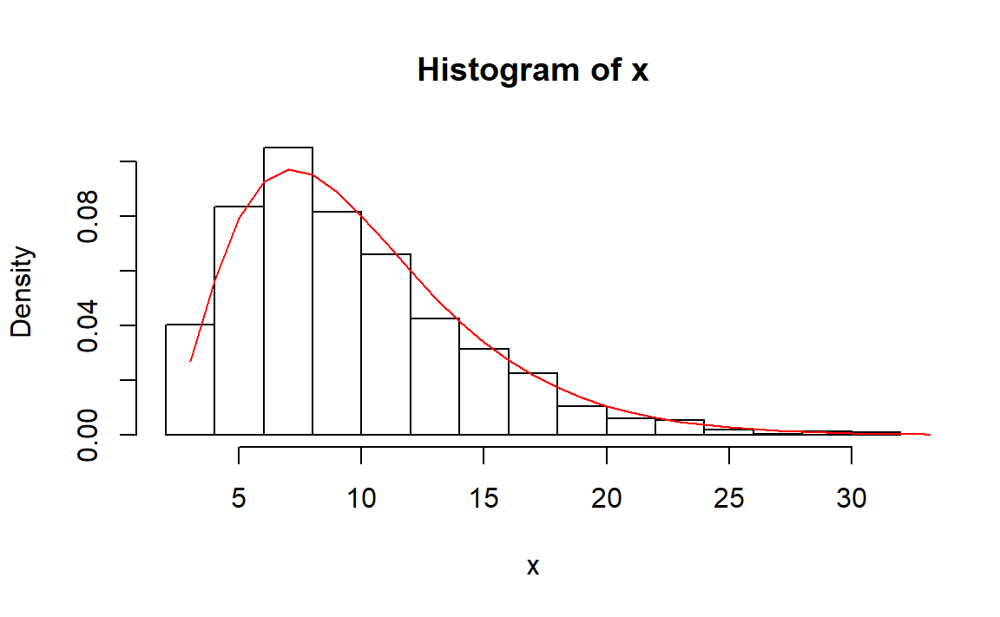
2、直接利用负二项分布的概率分布，由于负二项分布： \[ P\{x=k\} = \binom{k-1}{r-1}p^r(1-p)^{k-r},\quad k=r,r+1,\cdots \]
考虑分布函数： \[ \begin{align} F(k) &= P\{x\le k\}= P\{\text{在前k次实验至少成功r次}\}\\ &= 1-P\{\text{在前k次实验成功小于r次}\}\\ &= 1-\sum_{i=0}^{r-1}P\{\text{在前k次实验成功i次}\}\\ &= 1-\sum_{i=0}^{r-1}\binom{k}{i}p^i(1-p)^{k-i}\\ &:= 1-BS(k,r,p) \quad k=r,r+1,\cdots \end{align} \]
所以生成随机数\(X\)的方法为当且仅当\(F(k-1)< U\le F(k)\)取\(X=k\)。这又等价于 \[ BS(k,r,p)\le U <BS(k-1,r,p) \]
取 \[ \begin{align} X &= \min\{k:BS(k,r,p)\le U\} \end{align} \]
定义函数：
rng.nbinom.2 <- function(n, p, r)
{
# 先定义BS函数
BS <- function(k.,r.,p.)
{
i <- 0:(r.-1)
sum(choose(k.,i)*p.^i*(1-p.)^(k.-i))
}
x <- vector("integer", n)
u <- runif(n)
for (j in seq_along(x)) {
k <- r # 初值
while (BS(k,r,p)>u[[j]]) {
k <- k+1
}
x[[j]] <- k
}
x
}
# 测试
n <- 1000
p <- 0.3
r <- 3
x <- rng.nbinom.2(n,p,r)
y <- 0:50 # 失败次数
yy <- dnbinom(y,size = r,prob = p)
hist(x,breaks=15,freq=FALSE)
lines(y+r,yy,col="red")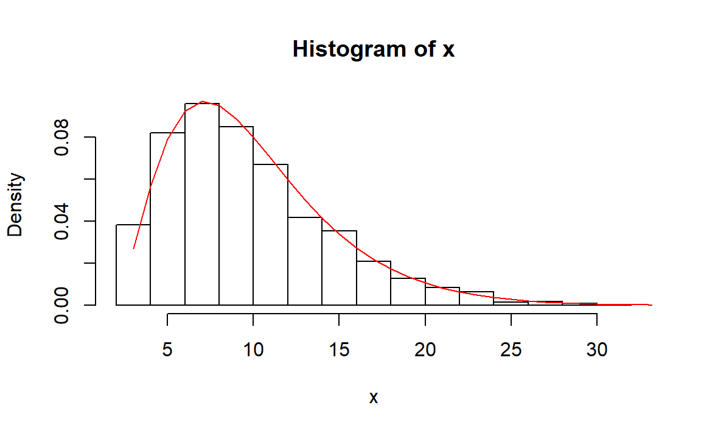
习题8
解：
1、先求分布函数的反函数： \[ F^{-1}(u) = u^n \]
# m:随机数序列长度
# n:参数n
rng.beta.1 <- function(m, n)
{
u <- runif(m)
x <- u^n
x
}
# 测试
n <- c(1,2,3,4)
m <- 1000
y <- seq(0,1,0.01)
opar <- par(no.readonly = TRUE)
par(mfrow=c(2,2))
for (i in seq_along(n)) {
x <- rng.beta.1(m, n[[i]])
hist(x,freq = FALSE,main=paste("n=",n[[i]],sep = ""))
lines(y,dbeta(y,1/n[[i]],1),col="red")
}
par(opar)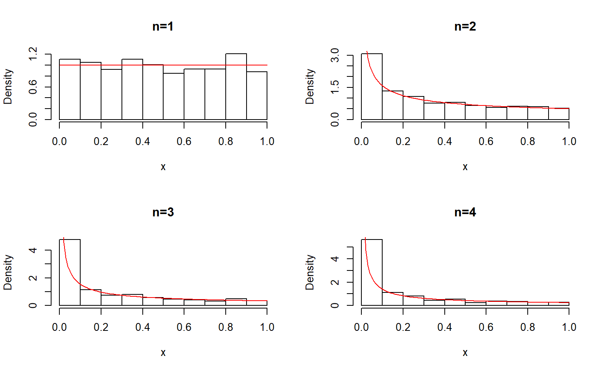
2、先求分布函数的反函数：
\[ F^{-1}(u) = u^{1/n} \]
# m:随机数序列长度
# n:参数n
rng.beta.2 <- function(m, n)
{
u <- runif(m)
x <- u^{1/n}
x
}
# 测试
n <- c(1,2,3,4)
m <- 1000
y <- seq(0,1,0.01)
opar <- par(no.readonly = TRUE)
par(mfrow=c(2,2))
for (i in seq_along(n)) {
x <- rng.beta.2(m, n[[i]])
hist(x,freq = FALSE,main=paste("n=",n[[i]],sep = ""))
lines(y,dbeta(y,n[[i]],1),col="red")
}
par(opar)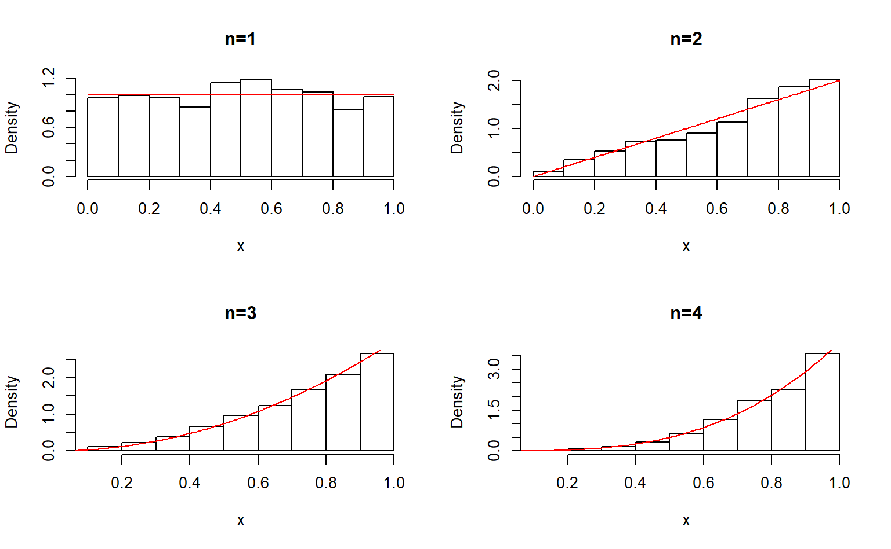
3、先求分布函数的反函数： \[ F^{-1}(u) = \sin(\frac{\pi u}{2}) \]
rng.sin <- function(n)
{
u <- runif(n)
sin(pi*u/2)
}
# 测试
n <- 1000
x <- rng.sin(n)
hist(x,freq = FALSE)
curve(2/(pi*sqrt(1-x^2)),0,1,add = TRUE,col="red")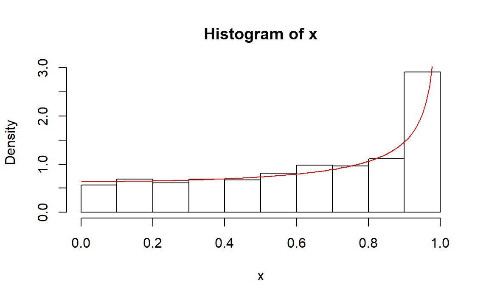
4、先求分布函数的反函数： \[ F^{-1}(u) = \tan(\pi u) \]
rng.tan <- function(n)
{
u <- runif(n)
tan(pi*u)
}
# 测试
n <- 1000
x <- rng.tan(n)
hist(x,freq = FALSE,breaks = 1000,xlim=c(-50,50),ylim=c(0,0.3))
curve(1/(pi*(1+x^2)),-50,50,add = TRUE,col="red")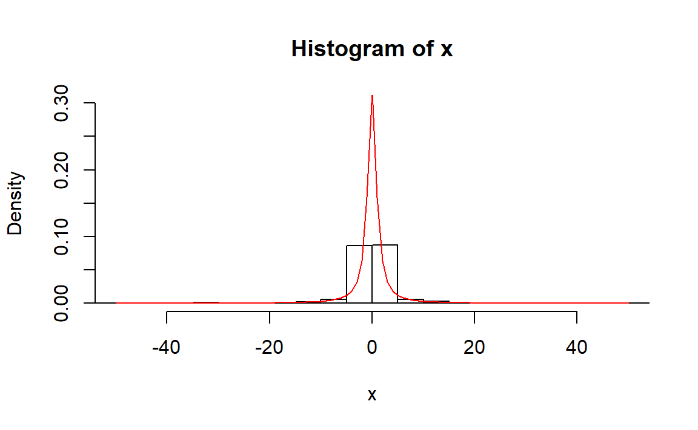
5、先求分布函数的反函数： \[ F^{-1}(u) = \arcsin(u) \]
rng.asin <- function(n)
{
u <- runif(n)
asin(u)
}
# 测试
n <- 1000
x <- rng.asin(n)
hist(x,freq = FALSE)
curve(cos(x),0,pi/2,add = TRUE,col="red")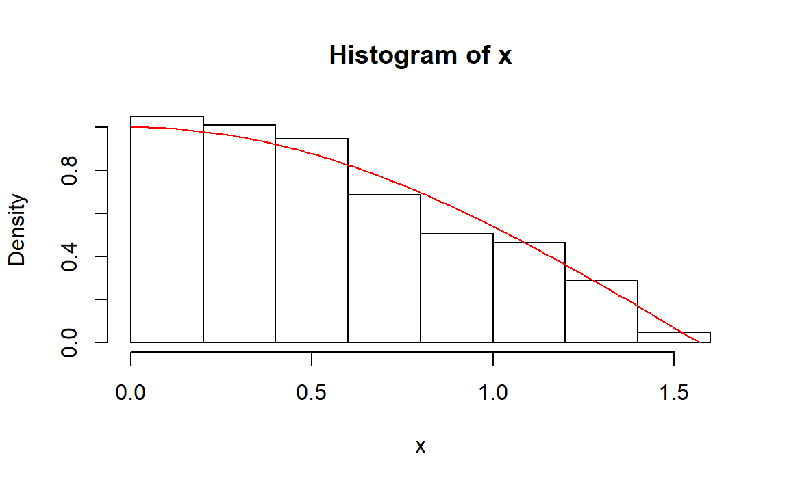
6、先求分布函数的反函数： \[ F^{-1}(u) = [-\eta\log(1-u)]^{1/\alpha} \]
rng.weibull <- function(n, alpha, eta)
{
u <- runif(n)
(-eta*log(1-u))^(1/alpha)
}
# 测试
alpha <- c(0.5,1,1.5,2)
eta <- c(0.5,1,1.5,2)
opar <- par(no.readonly = TRUE)
par(mfrow=c(2,2))
# 固定alpha=1
for (i in seq_along(eta)) {
x <- rng.weibull(n, alpha[[2]], eta[[i]])
hist(x,freq = FALSE,ylim=c(0,1.5),main = paste("alpha=1,eta=",eta[[i]],sep = ""))
curve(alpha[[2]]/eta[[i]]*x^(alpha[[2]]-1)*exp(-x^alpha[[2]]/eta[[i]]),0,5,add = TRUE,col="red")
}
# 固定eta=1
for (i in seq_along(alpha)) {
x <- rng.weibull(n, alpha[[i]], eta[[2]])
hist(x,freq = FALSE,main = paste("eta=1,alpha=",alpha[[i]],sep = ""))
curve(alpha[[i]]/eta[[2]]*x^(alpha[[i]]-1)*exp(-x^alpha[[i]]/eta[[2]]),0,20,add = TRUE,col="red")
}
par(opar)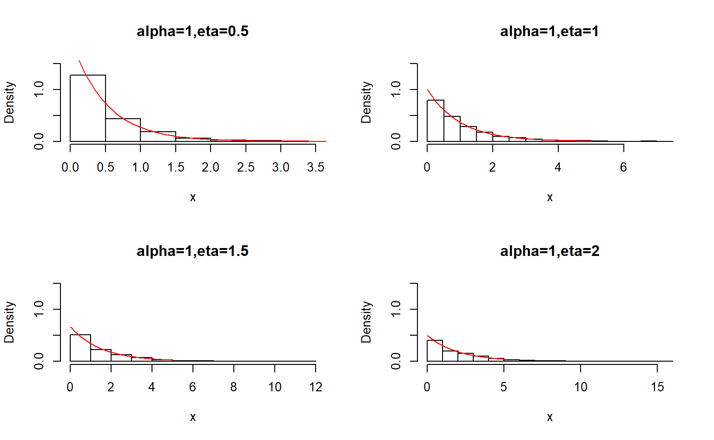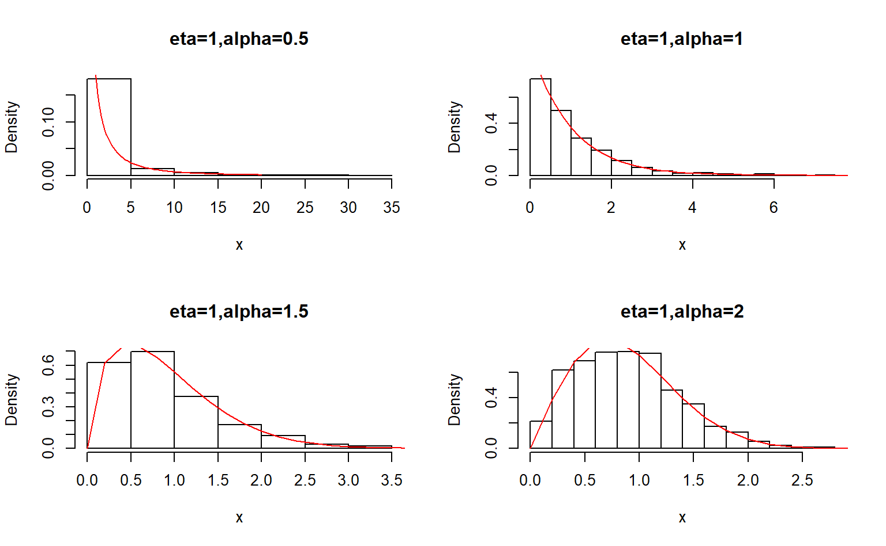
习题9
解：
思路是循环批量生成\(\exp(1)\)样本，再判断是否符合要求。关于每次生成样本数的选择，为了期望能循环一次就能得到\(n\)个符合要求的样本，可以利用\(F(0.05)\)作为批量生成样本中符合要求样本的概率，批量生成样本数可以大致利用\(n/F(0.05)\)。
rng.exp <- function(n, x0=0.05)
{
x <- vector("double", n)
i <- 0 # 记录符合要求的样本数
while (TRUE) {
y <- rexp(floor(n/pexp(x0))) # 分块生成样本，而不是单个生成
idx <- (y<x0)
j <- i+sum(idx) # 累计符合要求样本数
if(j>=n){
x[(i+1):n] <- y[idx][1:(n-i)]
break()
}
else if(j==i) next()
else{
x[(i+1):j] <- y[idx]
}
i <- j
}
x
}
# 随机模拟
n <- 1000
x <- rng.exp(n)
m <- mean(x)模拟得到的均值约为0.0249387。
下面进行理论推导。直接利用： \[ E(x)=\int_0^{0.05}xp(x)\mathrm dx = \frac{1-1.05e^{-0.05}}{1-e^{-0.05}} \]
m1 <- (1-1.05*exp(-0.05))/(1-exp(-0.05))利用计算机计算得到结果为0.0247917，相差1.4707064^{-4}。
习题10
解：
方法1：逆变换法，仿照例6.2
rng.10.1 <- function(n, m, lambda)
{
i <- 0:m
prob <- exp(-lambda)*lambda^i/factorial(i)
# 排序
ord <- order(prob, decreasing = TRUE)
i <- i[ord]
prob <- prob[ord]
Fvs <- c(0, cumsum(prob[1:m]))
u <- runif(n)
x <- vector("integer",n)
for (j in 1:n) {
x[j] <- i[[max(which(Fvs <= u[[j]]))]]
}
x
}方法2：注意到\(P\{X=k\}=e^{-\lambda}\frac{\lambda^k}{k!},k=0,1,\cdots\)，则\(X\)服从泊松分布。故可以生成服从泊松分布的随机数，若小于等于\(m\)则保留，否则丢弃，仿照习题9：
rng.10.2 <- function(n, m, lambda)
{
x <- vector("double", n)
i <- 0 # 记录符合要求的样本数
while (TRUE) {
y <- rpois(floor(n/ppois(m,lambda)),lambda) # 分块生成样本，而不是单个生成
idx <- (y<=m)
j <- i+sum(idx) # 累计符合要求样本数
if(j>=n){
x[(i+1):n] <- y[idx][1:(n-i)]
break()
}
else if(j==i) next()
else{
x[(i+1):j] <- y[idx]
}
i <- j
}
x
}测试：
# 测试
opar <- par(no.readonly = TRUE)
par(mfrow=c(1,2))
n <- 1000
m <- 10
lambda <- 4
x <- rng.10.1(n,m,lambda)
y <- rng.10.2(n,m,lambda)
hist(x,freq=FALSE,breaks = m+1,ylim=c(0,0.25))
hist(y,freq=FALSE,breaks = m+1,ylim=c(0,0.25))
par(opar)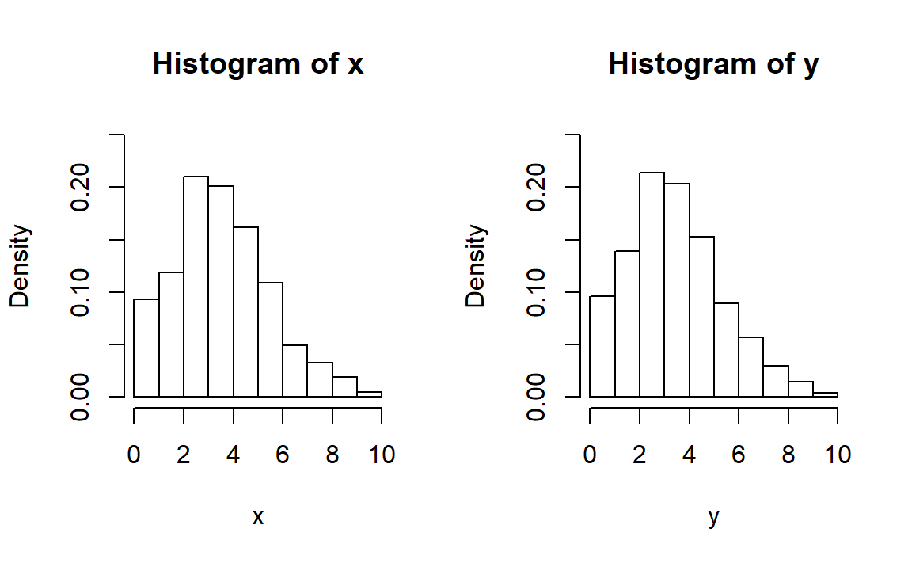
算是大致一致吧。
习题11
解：
1、逆变换法：
利用条件概率公式，设二项分布的分布函数为\(F_1\)： \[ F(y) = P\{Y\le y\}=\frac{P\{k\le X\le y\}}{P\{X\ge k\}}=\frac{F_1(y)-F_1(k-1)}{1-F_1(k-1)},\quad y=k,k+1,\cdots,n \]
则当 \[ \frac{F_1(i-1)-F_1(k-1)}{1-F_1(k-1)}<u\le \frac{F_1(i)-F_1(k-1)}{1-F_1(k-1)},\quad i=k,k+1,\cdots,n \] 时取\(y=i\)，上述条件又等价于 \[ F_1(i-1)<(1-F_1(k-1))u+F_1(k-1)\le F_1(i) \]
定义函数
# n:输出随机数长度
# size：实验次数
# k：题中参数
rng.11.1 <- function(n, size, k=0, prob=0.5)
{
x <- vector("integer", n)
ss <- k:size # 样本空间
Fvs <- pbinom(ss,size,prob) # F_1值
u <- runif(n)
u <- u+(1-u)*pbinom(k-1,size,prob)
for (i in 1:n) {
j <- min(which(Fvs>=u[[i]]))
x[[i]] <- ss[[j]]
}
x
}2、舍选法
密度函数： \[ P\{Y=y\} = F(y)-F(y-1)=\frac{F_1(y)-F_1(y-1)}{1-F_1(k-1)}=\frac{P\{X=y\}}{1-F_1(k-1)},\quad y=k,k+1,\cdots,n \]
# 这里的n表示试投次数
rng.11.2 <- function(n, size, k=0, prob=0.5)
{
y <- k:size
fvs <- dbinom(y,size,prob)/(1-pbinom(k-1,size,prob))
x <- sample(y,n,replace = TRUE)
if(k==size){
x <- rep(y, n)
fvs <- rep(1, 1)
}
u <- runif(n,0,min(1,max(fvs)))
for (i in seq_along(x)) {
if(u[[i]]>fvs[[x[[i]]-k+1]]) x[[i]] <- -1 # 拒绝
}
x[x>-1]
}3、理论分析
由于 \[ P\{Y=y\} = F(y)-F(y-1)=\frac{F_1(y)-F_1(y-1)}{1-F_1(k-1)}=\frac{P\{X=y\}}{1-F_1(k-1)},\quad y=k,k+1,\cdots,n \]
有：
# 测试
size <- 10
k <- 3
prob <- 0.5
y <- k:size
p <- dbinom(y,size,prob)/(1-pbinom(k-1,size,prob))
# 变换法
n <- 10000
x <- rng.11.1(n,size,k,prob)
m1 <- table(x)/n
# 拒绝采样
n <- 20000
x <- rng.11.2(n,size,k,prob)
m2 <- table(x)/length(x)
r <- length(x)/n
# 比较结果
df <- data.frame(y=y,p=p,m1=as.double(m1),m2=as.double(m2))
knitr::kable(df,digits = 3)| y | p | m1 | m2 |
|---|---|---|---|
| 3 | 0.124 | 0.123 | 0.125 |
| 4 | 0.217 | 0.208 | 0.211 |
| 5 | 0.260 | 0.264 | 0.266 |
| 6 | 0.217 | 0.220 | 0.211 |
| 7 | 0.124 | 0.126 | 0.124 |
| 8 | 0.046 | 0.048 | 0.052 |
| 9 | 0.010 | 0.010 | 0.010 |
| 10 | 0.001 | 0.001 | 0.000 |
基本上相差不大。
接下来考虑\(\alpha=P\{X\ge k\}\)对拒绝采样接受率的影响，实验中取不同的\(k\)用于表示不同的\(\alpha\)。
size <- 20
k <- 0:size
prob <- 0.4
n <- 20000 # 试投点数
r <- vector("double",length(k))
for(i in seq_along(k)){
x <- rng.11.2(n,size,k[[i]],prob)
r[[i]] <- length(x)/n # 接受率
}
alpha <- 1-pbinom(k-1,size,prob)
plot(alpha,r,type="p",pch=16,cex=0.5,col="blue")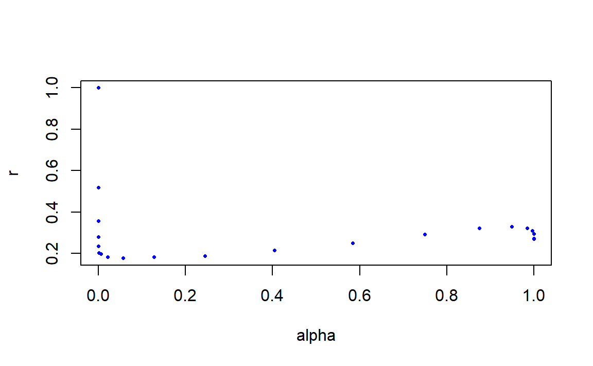
也不好说\(\alpha\)取什么值时拒绝采样方法不可取，应该是比较小的时候。
习题12
解：
方法1：拒绝采样
先观察一下密度函数：
curve(x*exp(-x),0,20,ylab="p(x)")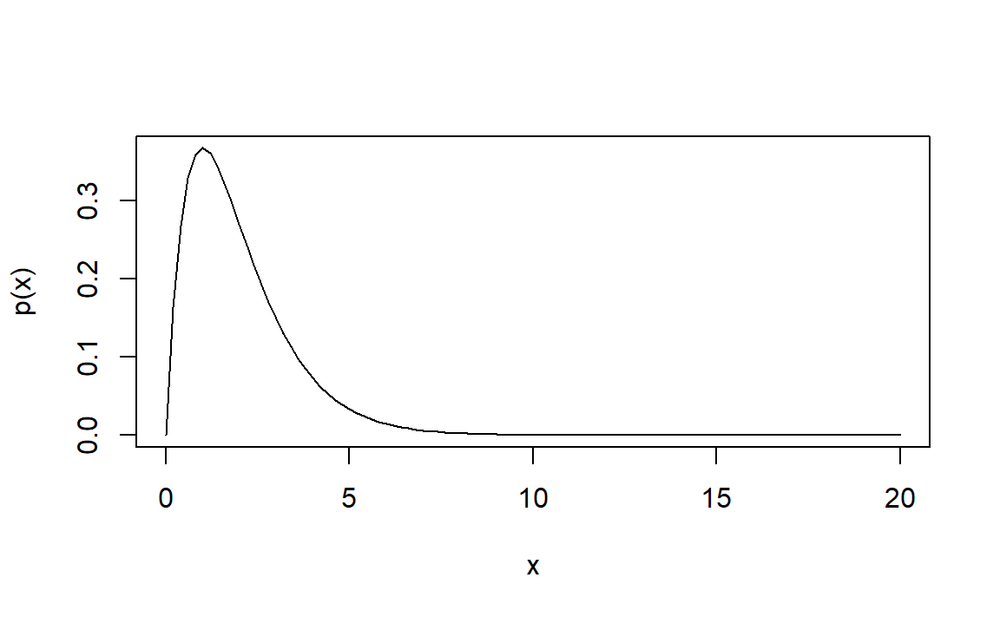
若使用均匀分布作提议分布，容易求得 \[ \min p(x) = p(1) = 1/e \]
采样：
# 提议分布为均匀分布
# px为密度函数,
# n不是生成px的样本数，而是提议分布的样本数
rejection_sampling_unit <- function(px, n, c,...){
x <- runif(n, ...) # 生成n个随机数
y <- px(x)
z <- runif(n, 0, c)
d <- (z<=y)
output <- list(data = tibble(x,y,z,d),
samples = x[d])
return(output)
}
px <- function(x){
y <- ifelse(x>0,x*exp(-x),0)
}
n <- 10000
c = 1/exp(1)
out1 <- rejection_sampling_unit(px, n, c, 0, 10)
tb1 <- out1$data
tb1 %>% ggplot(mapping = aes(x = x)) +
geom_point(mapping = aes(y = z, color = d, shape=d), size = 0.5) +
geom_line(aes(y = y)) +
geom_line(aes(y = c), linetype = 7)+
labs(x="z",y=NULL,color="acceptance",shape = "acceptance")+
scale_shape_manual(values = c(20,8))+
ggtitle(paste("以均匀分布作提议分布的拒绝采样，接受率=",mean(tb1$d),sep = ""))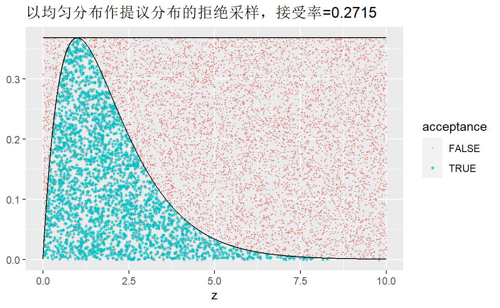
接受率比较低，效率不高。
方法2：利用指数分布作提议分布。注意到\(X\sim\mathrm{Gamma}(2,1)\)，\(EX=2\)，使用期望为\(1\)的指数分布\(g(x)=0.5e^{-0.5x}\)作为提议分布。
# 提议分布为均匀分布
# px为密度函数,
# n不是生成px的样本数，而是提议分布的样本数
rejection_sampling_exp <- function(px, n,...){
x <- rexp(n, ...) # 生成n个随机数
y <- px(x)
gx <- dexp(x, ...)
ppx <- max(y/gx)*gx # 求c
z <- runif(n, 0, ppx)
d <- (z<=y)
output <- list(data = tibble(x,y,z,d,ppx),
samples = x[d])
return(output)
}
px <- function(x){
y <- ifelse(x>0,x*exp(-x),0)
}
n <- 5000
out1 <- rejection_sampling_exp(px, n, 0.5)
tb1 <- out1$data
tb1 %>% ggplot(mapping = aes(x = x)) +
geom_point(mapping = aes(y = z, color = d, shape=d), size = 0.5) +
geom_line(aes(y = y)) +
geom_line(aes(y = ppx), linetype = 7)+
labs(x="z",y=NULL,color="acceptance",shape = "acceptance")+
scale_shape_manual(values = c(20,8))+
ggtitle(paste("以指数分布作提议分布的拒绝采样，接受率=",mean(tb1$d),sep = ""))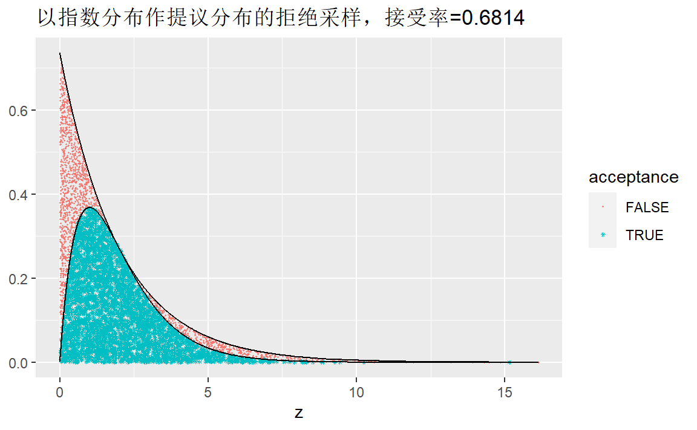 接受率提高了很多。
习题13
解：
设 \[ P\{Z=1\}=0.3,P\{Z=2\}=0.3,P\{Z=3\}=0.26,P\{Z=4\}=0.14 \] 当\(Z=1\)，X均匀取\(1,2,3,4,5\)，当\(Z=2\)，X均匀取\(6,9\)，当\(Z=3\)，X均匀取\(7,10\)，当\(Z=4\)，X均匀取\(8\).
rng.13 <- function(n)
{
z <- sample.int(4, n, replace = TRUE, prob = c(0.3,0.3,0.26,0.14))
x <- vector("integer",n)
x[z==1] <- sample(1:5,sum(z==1),replace = TRUE)
x[z==2] <- sample(c(6,9),sum(z==2),replace = TRUE)
x[z==3] <- sample(c(7,10),sum(z==3),replace = TRUE)
x[z==4] <- 8
x
}
# 测试
n <- 10000
x <- rng.13(n)
table(x)/n
#> x
#> 1 2 3 4 5 6 7 8 9 10
#> 0.0613 0.0590 0.0602 0.0585 0.0589 0.1507 0.1245 0.1407 0.1510 0.1352大致符合。
习题14
解：
似乎有点问题。
\[ F(k)=P\{X\le k\}=\sum_{i=1}^kP\{X=i\}=\frac32-\frac{1}{2^{k+1}}-\frac{2^k}{3^k}\rightarrow \frac32\ne 1 \]
习题15
解：
1、逆变换法：
先求分布函数： \[ F(x)= \begin{cases} \frac12 e^x & x\le 0\\ 1-\frac12 e^{-x} & x>0\\ \end{cases} \]
求逆函数可以得到： \[ X= \begin{cases} \log(2u) & u\le 0.5\\ -\log(2(1-u)) & u>0.5 \end{cases} \]
采样函数：
rng.15.1 <- function(n)
{
u <- runif(n)
x <- ifelse(u<=0.5,log(2*u),-log(2-2*u))
x
}
# 测试
n <- 10000
x <- rng.15.1(n)
hist(x,breaks = 100,freq = FALSE,ylim=c(0,0.5))
curve(0.5*exp(-abs(x)),from = -10,to =10,add = TRUE,col="red")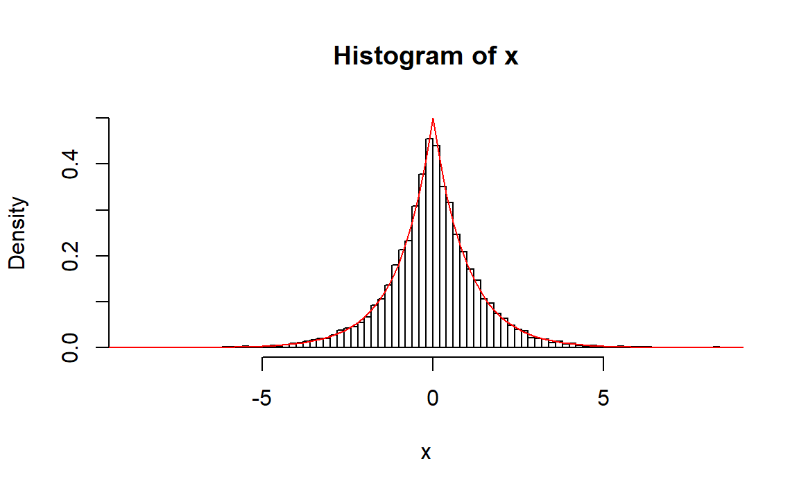
2、复合法
实际上类似于上面的逆变换法，设 \[ P\{Z=0\}=P\{Z=1\}=0.5 \]
当\(Z=0\)，取\(X=\log u\)，当\(Z=1\)，取\(X=-\log u\)。
采样函数：
rng.15.2 <- function(n)
{
z <- runif(n)
u <- runif(n)
x <- log(u)
x <- ifelse(z<=0.5,x,-x)
x
}
# 测试
n <- 10000
x <- rng.15.2(n)
hist(x,breaks = 100,freq = FALSE,ylim=c(0,0.5))
curve(0.5*exp(-abs(x)),from = -10,to =10,add = TRUE,col="red")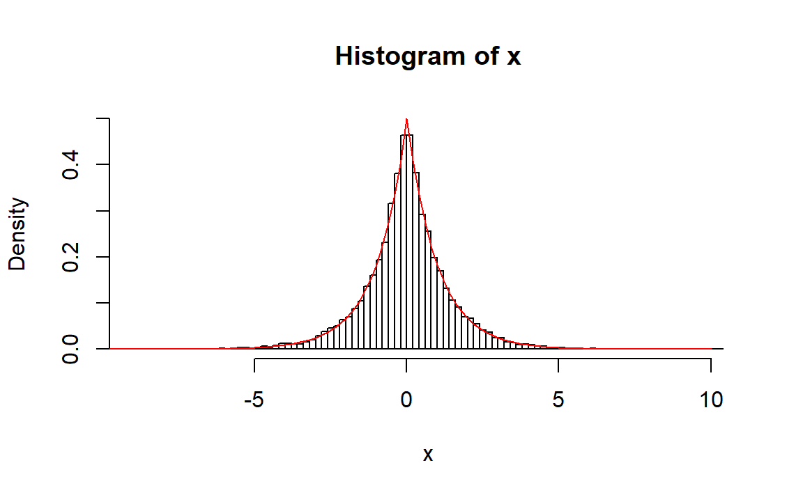
习题16
解：
比较容易想到的当然是拒绝采样。
先观察密度函数形状：
curve(x*(1-x)^3/0.000336,0.8,1,ylab="p(x)")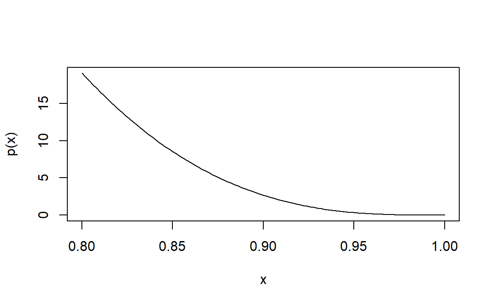
使用均匀分布作提议分布拒绝率应该会在0.5以下，不妨考虑一下\([0.8,1]\)上的三角分布： \[ p(x) = 50-50x,\qquad 0.8<x<1 \] 其分布函数的逆为： \[ F^{-1}(u) = 1-\frac{\sqrt{u}}{5} \]
# 提议分布为三角分布
# px为密度函数,
# n不是生成px的样本数，而是提议分布的样本数
rejection_sampling_tri <- function(px, n){
x <- 1-sqrt(runif(n))/5 # 生成n个随机数
y <-px(x)
# 提议分布
ppx <- (px(1)-px(0.8))/0.2*(x-0.8)+px(0.8)
z <- runif(n,0,ppx)
d <- (z<=y)
output <- list(data = tibble(x,y,ppx,z,d),
samples = x[d])
return(output)
}
px <- function(x){
x*(1-x)^3/0.000336
}
n <- 10000
out1 <- rejection_sampling_tri(px, n)
tb1 <- out1$data
tb1 %>% ggplot(mapping = aes(x = x)) +
geom_point(mapping = aes(y = z, color = d, shape=d), size = 0.5) +
geom_line(aes(y = y)) +
geom_line(aes(y = ppx), linetype = 7)+
labs(x="z",y=NULL,color="acceptance",shape = "acceptance")+
scale_shape_manual(values = c(20,8))+
ggtitle(paste("以三角分布作提议分布的拒绝采样，接受率=",mean(tb1$d),sep = ""))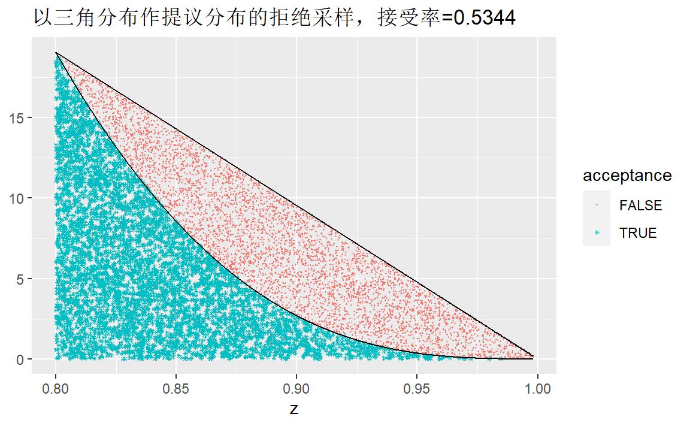
还有另一个方法是，注意到这是一个条件\(\mathrm{Beta}(2,4)\)分布，即 \[ p(x) = p(y|y>0.8),\quad y\sim \mathrm{Beta}(2,4) \]
所以另一个办法就是生成\(\mathrm{Beta}(2,4)\)分布随机数，若大于\(0.8\)就保留：
# n：试投点数
rng.16.2 <- function(n)
{
x <- rbeta(n,2,4)
x[x>0.8]
}
# 测试
n <- 100000
x <- rng.16.2(n)
hist(x,freq = FALSE)
curve(x*(1-x)^3/0.000336,0.8,1,add = TRUE,col="red")
length(x)/n
#> [1] 0.00635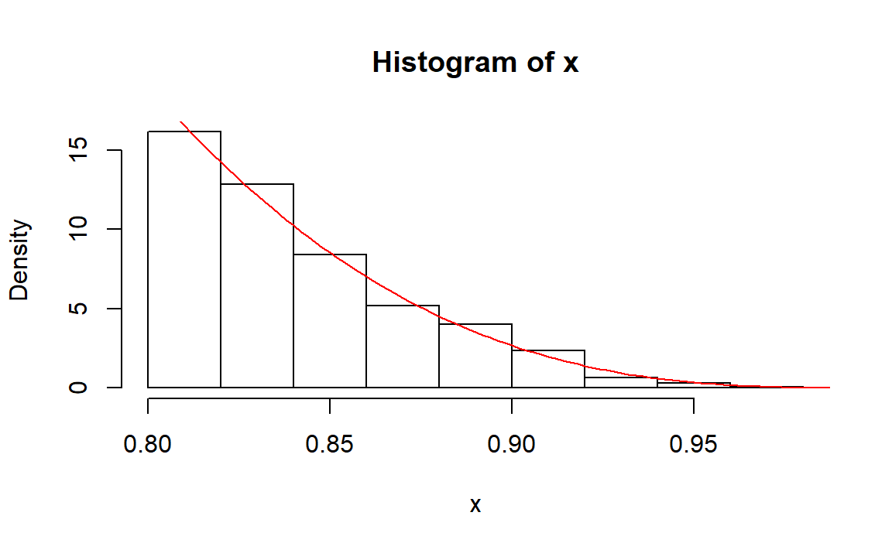
但是拒绝率太低了，惨不忍睹。
习题17
解：
- 只证前半部分。
把\(Y\)看作\(X\)的一个变换，\(Y=g(X)=a+(b-a)X\)，\(X\)有密度函数\(p_R(x)=2x,x\in(0,1)\)，函数\(g(\cdot)\)有反函数\(x=g^{-1}(y)=h(y)=(y-a)/(b-a)\)，则\(Y\)有密度函数： \[ p_Y(x) = p_R(h(y))\cdot|h'(y)|=2\cdot\frac{y-a}{b-a}\cdot\frac1{b-a}=\frac{2(y-a)}{(b-a)^2},\quad y\in(a,b) \] 故\(Y\sim\mathrm{RT}(a,b)\).
- 类似地，令\(Y=g(X)=1-X\)，\(h(y)=1-y\)，则\(Y\)有密度函数
\[ p_Y(x) = p_R(h(y))\cdot|h'(y)|=2(1-y)\cdot|-1|=2(1-y),\quad y\in(0,1) \] 故\(Y\sim\mathrm{LT}(0,1)\).
- \(X\)的分布函数 \[ F(x)=P\{X\le x\}=P\{U_1\le x,U_2\le x\}=P\{U_1\le x\}P\{U_2\le x\}=x^2,\quad x\in (0,1) \] 故\(X\sim\mathrm{RT}(0,1)\).
习题18
解：
只需要证明它是变形的Box-Muller变换即可。
由于\(\alpha\sim U(0,1)\)，则\(\tilde\alpha=\alpha/2\pi\sim U(0,1)\).
由于\(R\sim\exp(1/2)\)，则\(1-e^{-R/2}\sim U(0,1)\)，即\(\tilde R=e^{-R/2}\sim U(0,1)\).
并且还有\(\alpha\perp\!\!\!\!\perp R\)，所以\(\tilde\alpha\perp\!\!\!\!\perp \tilde R\)，利用Box-Muller公式，有 \[ \begin{cases} X = \sqrt{-2\ln\tilde R}\cos\left(\frac{\alpha}{2\pi}\cdot 2\pi\right)\\ Y = \sqrt{-2\ln\tilde R}\sin\left(\frac{\alpha}{2\pi}\cdot 2\pi\right) \end{cases} \] 相互独立且都服从标准正态分布。
习题20
解：
容易知道，联合分布的密度函数为\(p(x,y)=1/\pi\)。
（1）\(R^2\)的分布函数： \[ F_1(r^2)=P\{R^2\le r^2\}=\int_{x^2+y^2\le r^2} p(x,y)\mathrm dx\mathrm dy=r^2 \] 从而\(R^2\sim U(0,1)\)。
（2）不妨用\(A(\theta,R^2)\)表示圆\(x^2+y^2\le R^2\)中弧度为\(\theta\)的扇形区域，则\(\theta\)的分布函数： \[ F_2(z)=P\{\theta\le z\}=\int_{A(z,1)} p(x,y)\mathrm dx\mathrm dy=\frac z{2\pi} \] 从而\(\theta\sim U(0,2\pi)\)。
（3）\((R^2,\theta)\)的联合分布函数： \[ F(r^2,z)=P\{R^2\le r^2,\theta\le z\}=\int_{A(z,r^2)} p(x,y)\mathrm dx\mathrm dy=r^2\cdot\frac{z}{2\pi}=F_1(r^2)\cdot F_2(z) \] 从而两者独立。
习题21
解：
1、由于 \[ F(x)=\frac{G(x)-G(a)}{G(b)-G(a)}=\frac{P\{a<X\le x\}}{P\{a<X\le b\}}=P\{X\le x|a<X\le b\} \]
2、这不是显然吗…（嚣张doge）。
习题22
解：
1、\(p_1=\lambda_1\)显然，不妨记\(S_n=\sum_{k=1}^np_k\)，由于 \[ 1-\lambda_n=\frac{1-S_n}{1-S_{n-1}} \] 则 \[ (1-\lambda_1)\cdots(1-\lambda_{n-1})\lambda_n=(1-p_1)\frac{1-S_2}{1-S_{1}}\cdot\frac{1-S_3}{1-S_{2}}\cdots\frac{1-S_{n-1}}{1-S_{n-2}}\frac{p_n}{1-S_{n-1}}=p_n \]
2、由算法过程可以知道，取\(X=k\)当且仅当前\(k-1\)个\((0,1)\)均匀随机数大于等于对应的\(\lambda_i\)，并且第\(k\)个\((0,1)\)均匀随机数小于\(\lambda_k\)。而第\(i\)个\((0,1)\)均匀随机数大于\(\lambda_i\)的概率为\(p_i=1-\lambda_i\)，从而取\(X=k\)的概率为 \[ p=p_1\cdot p_2\cdots p_{k-1}(1-p_k)=(1-\lambda_1)\cdots(1-\lambda_{k-1})\lambda_k=p_k \] 从而算法是合理的。
3、上述算法不就是生成\(X\)分布的随机数吗…明显的有效性？大概是一个几何分布的“无记忆性”，\(\lambda_k\)是一个常数，当生成随机数数量较大时也很有效，因为不需要计算所有的\(\lambda_k\)。
习题23
解：
1、几何分布，\(p=\lambda\)。
2、…